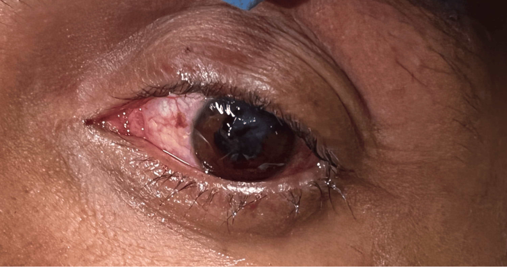

Traumatic pupillary deformity
Clinical photograph from a penetrating nail-gun globe injury showing pupillary deformity compatible with open globe.
Cesarz et al., Cureus 2025, When the Nail Gun Goes Wrong
Open access, CC BY 4.0 per Cureus article license.